컴퓨터응용가공산업기사 (2005-08-07 기출문제)
1과목: 기계가공법 및 안전관리
1. 자전거에 쓰이는 프레임용 파이프를 제작하는 방법은?
- 경납땜(brazing)
- 맞대기 심 용접(butt seam welding)
- 레이저 빔 용접(laser beam welding)
- 테르밋 용접(thermit welding)
(정답률: 57%)

2. 밀링머신의 작업종류가 아닌 것은?
- 절단작업
- 각도 깎기작업
- 기어 절삭작업
- 폴리싱작업
(정답률: 35%)
3. 높이를 측정하거나 스크라이버 끝으로 금긋기 작업을 할 수 있는 측정기는?
- 버니어 캘리퍼스
- 마이크로 미터
- 하이트 게이지
- 다이얼 게이지
(정답률: 70%)
4. 경도가 가장 큰 열처리 조직은?
- 오스테나이트 (austenite)
- 마르텐사이트 (martensite)
- 솔바이트 (sorbite)
- 펄라이트(pearlite)
(정답률: 71%)
5. 사인바(sine bar)에 관하여 틀리게 설명한 것은?
- 2개의 원주핀이 블록과 더불어 사용된다.
- 3각형모양의 블록이 필수적이다.
- 3각함수를 이용하여 각도의 측정을 정밀하게 하는 데 사용한다.
- 블록을 올려놓기 위한 정반도 함께 사용된다,
(정답률: 56%)
6. 버핑(buffing)머신은 무엇을 할 때 사용하는 기계인가?
- 밀링커터(milling cutter)를 만들 때
- 광택이 있는 매끄러운 다듬질을 할 때
- 금속에 조각을 할 때
- 방전가공을 할 때
(정답률: 77%)
7. 강철의 표면 경화법이 아닌 것은?
- 청화법(cyaniding)
- 침탄법(carburizing)
- 질화법(nitriding)
- 스피닝(spinning)
(정답률: 77%)
8. 단조를 온도에 따라 구분할 때 냉간단조에 해당되지 않는 것은?
- 코이닝(coining)
- 업세팅(up setting)
- 스웨이징(sweging)
- 코울드헤딩(cold heading)
(정답률: 52%)
9. 탄소강선의 냉간 인발에 있어서 가공경화가 나타나 계속작업이 어려울 때 조직을 솔바이트상 펄라이트 화 시키는데 이용되는 방법으로 염욕로중에서 항온변태를 일으키게 하는 열처리 방법은?
- 패턴팅(patenting)
- 마 퀜칭(mar quenching)
- 완전 어널링( Full Annealing)
- 스페로다이징(Spherodizing)
(정답률: 23%)
10. 단조중 업셋(Up set)작업에 대하여 올바르게 나타낸것은?
- 단면을 작게하여 길이를 늘인다.
- 재료에 단을 붙인다.
- 길이를 줄여 단면을 크게한다.
- 가늘고 길게 늘인다.
(정답률: 35%)
11. 100mm 의 사인바( Sine Bar)에 의해서 30˚를 만드는데 필요한 블록게이지가 다음과 같이 준비되어 있을때, 필요없는 것은?
- 40mm
- 20mm
- 5.5mm
- 4.5mm
(정답률: 34%)
12. 리벳(rivet)작업 용구와 관계가 없는 것은?
- 토치(Torch)
- 스냅(Snap)
- 해머(Hammer)
- 펀치(Punch)
(정답률: 66%)
13. 절삭 작업에서 절삭 저항력이 150kgf, 절삭속도가 60m/min라면 절삭동력은 몇 PS인가?
- 1.5
- 2.0
- 3.0
- 3.5
(정답률: 49%)
14. Wm은 주물의 중량, Sm은 주물의 비중이고, Wp는 목형의 중량, Sp는 목형의 비중이라 할 때 옳은 관계식은?
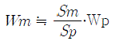
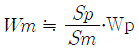
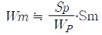
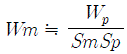
(정답률: 31%)
15. 다이스나 롤(roll) 등의 성형공구를 회전 또는 직선운동 시키면서 그 사이에 소재를 밀어 넣어 회전시켜서 성형하는 가공법으로 나사, 기어 등의 생산에 이용되는 가공은?
- 프레스 가공
- 인발가공
- 전조가공
- 단조가공
(정답률: 38%)
16. 다음 가공법 중 소성가공에 속하지 않는 것은?
- 압출
- 압접
- 단조
- 압인
(정답률: 47%)
17. 리드 스크루 1인치에 6산의 선반으로 1인치에 대하여 5(1/2)산의 나사를 깎으려고 할 때, 변환기어의 잇수는?(단, 주동축 기어: A 중동축 기어: C 이다.)
- A:120 B:110
- A:127 B:110
- A:110 B:120
- A:110 B:127
(정답률: 32%)
18. 주물사의 주성분이 되는것은?
- Al2O3
- Fe2O3
- MgO
- SiO2
(정답률: 32%)
19. 표준게이지(standard gauge)에 해당되지 않는 것은?
- 하이트 게이지
- 드릴게이지
- 와이어 게이지
- 틈새 게이지
(정답률: 23%)
20. 연삭 가공된 표면에 떨림(chatter)이 나타나는 원인이 아닌 것은?
- 연삭 숫돌이 불균형일 때
- 연삭 숫돌이 진원이 아닐때
- 연삭 숫돌의 결합도가 굳을 때
- 연삭액이 부적합할 때
(정답률: 47%)
2과목: 기계설계 및 기계재료
21. 순철에서 일어나지 않는 변태는?
- A0
- A2
- A3
- A4
(정답률: 58%)
22. 금속의 일반적인 특성이 아닌것은?
- 고체상태에서 결정구조를 갖는다.
- 열과 전기의 부도체이다.
- 연성 및 전성이 좋다.
- 금속적 광택을 가지고 있다.
(정답률: 55%)
23. 6:4 황동에 1~2% Fe를 첨가하여 결정입자를 미세화시키고 강도를 증가시킨 합금을 무엇이라 하는가?
- 네이벌 황동
- 델타메탈
- 듀라나 메탈
- 톰백
(정답률: 42%)
24. 다음 구조용 복합재료 중 섬유강화 금속은 어느 것인가?
- FRTP
- SPF
- FRM
- FRP
(정답률: 55%)
25. 다음 원소들 중에서 용융점이 가장 낮은 것은?
- 백금
- 수은
- 납
- 아연
(정답률: 37%)
26. 뜨임처리 목적으로 틀린 것은?
- 담금질 응력제거
- 치수의 경년 변화 방지
- 연마 균열의 방지
- 내마모성의 저하
(정답률: 47%)
27. 일반적으로 냉간가공과 열간가공의 기준은 무엇으로 하는가?
- 회복
- 재결정 온도
- 가공도
- 결정입도
(정답률: 76%)
28. 강의 표면경화법으로서 표면에 Al을 침투시키는 표면경화법은 어느것인가?
- 크로마이징
- 칼로라이징
- 실리콘나이징
- 브론나이징
(정답률: 66%)
29. 탄소강에 나타나는 취성과 원인들이다. 틀린것은?
- 청열취성-200~300℃
- 적열취성- 황(S)
- 상온취성-인(P)
- 고온취성-질소(N)
(정답률: 61%)
30. 공구재료가 갖추어야 할 일반적 성질 중 틀린 것은?
- 취성이 클것
- 인성이 클것
- 고온경도가 클것
- 내마멸성이 클것
(정답률: 74%)
31. 지름 14mm의 연강봉에 800kgf의 인장하중이 작용할 때 발생하는 응력은 얼마 정도인가?
- 1.5kgf/mm2
- 2.3kgf/mm2
- 4.6kgf/mm
- 5.2kgf/mm2
(정답률: 48%)
32. 축을 설계할 때 고려해야 할 사항이 아닌 것은?
- 강도 및 변형
- 진동
- 회전방향
- 열응력
(정답률: 36%)
33. 2줄 나사의 리드가 3mm 일 때 피치는 얼마인가?
- 0.75mm
- 1mm
- 1.25mm
- 1.5mm
(정답률: 62%)
34. 다음중 베어링이 갖추어야 할 특성으로 적당하지 않는 것은?
- 강도가 충분할 것
- 방열 작용이 충분할 것
- 마찰계수가 충분히 클 것
- 급유 작용이 좋을 것
(정답률: 64%)
35. 바깥지름 192mm, 잇수가 62인 표준 스퍼기어의 모듈은?
- 2
- 3
- 3.097
- 5
(정답률: 39%)
36. 축이 베어링과 접촉하여 받쳐지고 있는 축 부분을 무엇이라 하는가?
- 하우징
- 저어널
- 리테이너
- 내륜
(정답률: 41%)
37. 26000kgf・mm의 토오크를 받는 지름 80mm의 회전축에 사용하는 키이가 (b x h x l)=(18 x 12 x 100)mm이다. 이 때 키이에 생기는 전단응력은 몇 kgf/mm2인가?
- 0.36
- 0.46
- 0.57
- 2.41
(정답률: 20%)
38. 기본 부하 용량이 32kN인 단열 깊은 홈형 볼 베어링이 800rpm으로 회전하면서 4kN의 레이디얼 하중을 받고 있을 때 이 베어링의 수명은 약 몇 시간인가?
- 8565
- 10656
- 18654
- 21312
(정답률: 53%)
39. 역류를 방지하여 유체를 한쪽 방향으로만 흘러가게 하는 밸브(valve)로 적합한 것은?
- 체크 밸브
- 감압 밸브
- 나비형 밸브
- 다이어프램 밸브
(정답률: 73%)
40. 큰축과 고속도 정밀 회전축에 적당하고, 공장의 전동축 또는 일반 기계축의 이음에 널리 쓰이고 있는 커플링으로 가장 알맞은 것은?
- 분할 원통 커플링
- 셀러 커플링
- 휨 커플링
- 플랜지 커플링
(정답률: 50%)
3과목: 컴퓨터응용가공
41. 다음 투상의 평면도에 해당하는 것은?
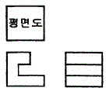
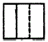
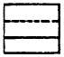
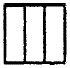
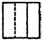
(정답률: 44%)
42. DXF(Datea Exchange File) 파일의 섹션구성에 해당되지 않는것은?
- header section
- library section
- table section
- entitiy section
(정답률: 45%)
43. 어떤 도형을 X축을 2배, Y축을 3배하려고 할때 변환행렬 T는 어느것인가?
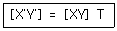
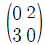
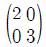
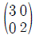
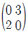
(정답률: 66%)
44. 보기의 입체도를 화살표 방향에서 본 투상도로 맞는것은?
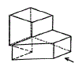
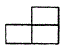
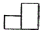
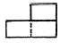
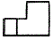
(정답률: 47%)
45. 다음 CAD 시스템에서 사용되고 있는 출력장치들이다. 이 중 래스터 스캔(raster scan)방식을 이용한 장치가 아닌것은?
- 펜 플로터 (pen plotter)
- 정전식 플로터 (electrostatic plotter)
- 레이저 프린터 ( laser printer)
- 잉크 제트 프린터 (ink jet printer)
(정답률: 48%)
46. 중심선이 (0,0)이고 반지름이 r인 원을 매개변수식으로 나타낸 것중 맞는것은? (단, 0 ≦ θ ≦ 2π )
- X= r cos θ , y = r sin θ
- X= r sin θ , y = cos θ
- X= r cos θ , y = r2 sin θ
- X= r sin θ , y = r2 sin θ
(정답률: 38%)
47. 치수 보조선에 대한 설명으로 옳지 않은 것은?
- 필요한 경우에는 치수선에 대하여 적당한 각도로 평행한 치수 보조선을 그을 수 있다.
- 외형선과 같은 굵기의 선으로 그린다.
- 치수선보다 2~3mm 연장하여 그린다.
- 가는 실선으로 긋고, 치수선에 직각 되게 긋는다.
(정답률: 61%)
48. 가상현실 장비의 주요 모듈로는 머리 부착 디스플레이장치, 신체 추적 수신기, 동작 감지기 등이 있다. 이들 모듈에서 사용되고 있는 계산 모델의 차수는?
- 3차원
- 4차원
- 5차원
- 6차원
(정답률: 7%)
49. 점 P의 좌표가 x=6, y=4 일때 원점을 중심으로 시계 반대 방향으로 90 ̊회전시킨 점 P` 는?
- (6,4)
- (-6,-4)
- (-4,6)
- (4,-6)
(정답률: 41%)
50. 유니파이 나사의 호칭 1/2-13UNC에서 13이 뜻하는 것은?
- 바깥지름
- 피치
- 산의 수
- 등급
(정답률: 27%)
51. 널리 사용되는 원추 단면 곡선에는 원, 타원,포물선 및 쌍곡선등이 있다. 포물선을 음함수 형태로 표시한 식은?
- x2+y2-r2=0
- y2-4ax=0
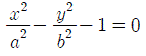
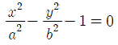
(정답률: 31%)
52. 기하공차의 부가 기호 중 돌출 공차역을 나타내는 것은?
- Ⓑ
- Ⓐ
- Ⓜ
- Ⓟ
(정답률: 34%)
53. 평면상에서 하나의 원 (circle)을 기하학적으로 정의 하는 방법으로 맞지 않는 것은?
- 중심점과 반지름
- 중심점과 원주상의 한점
- 원주상의 3점
- 원주상의 한점과 원에 접하는 직선 하나
(정답률: 50%)
54. 코일스프링의 제도방법 중 틀린 것은?
- 스프링은 원칙적으로 무하중 상태로 그린다.
- 그림안에 기입하기 힘든 사항은 일괄하여 요목표에 표시한다.
- 코일스프링의 중간부분을 생략할 때는 생략부분을 파단으로 긋는다.
- 특별한 단서가 없는 한 모두 오른쪽 감기로 도시한다.
(정답률: 40%)
55. 컴퓨터의 주기억장치와 CPU의 처리속도 때문에 개발된 것은 어느 것인가?
- blocking
- cache memory
- channel
- interrupt
(정답률: 78%)
56. 평벨트 풀리의 도시법이아닌 것은?
- 암은 길이방향으로 절단하여 단면을 도시한다.
- 풀리는 축직각 방향의 투상을 주투상도로 할 수 있다.
- 풀리와 같이 대칭인 것은 한쪽만 그리고 대칭도시 할 수 있다.
- 암의 단면형은 도형의안이나 밖에 회전 단면도를 도시한다.
(정답률: 32%)
57. 도면에 두 종류 이상의 선이 같은 장소에 겹치는 경우 다음 중 가장 우선적으로 그려야 할 선은?
- 숨은선
- 치수 보조선
- 절단선
- 중심선
(정답률: 75%)
58. 다음 보기 중 서로 관련성이 없는 것은?
- DTE
- DCE
- DSR
- DXF
(정답률: 56%)
59. KS규격 끼워맞춤에서 ø50H7m6은 어떤 끼워맞춤을 의미하는가?
- 구멍 기준식 중간 끼워맞춤
- 구멍 기준식 억지 끼워맞춤
- 구멍 기준식 헐거운 끼워맞춤
- 축 기준식 억지 끼워맞춤
(정답률: 45%)
60. 기계제도에서 사용하는 도면의 폭과 길이의 비는?
- 1:√2
- √2:1
- 1:√3
- 1:2
(정답률: 32%)
4과목: 기계제도 및 CNC공작법
61. 다음 중 공간상에 존재하는 여러 점을 모두 지나는 자유곡선을 모델링하는 것은?
- 페어링
- 근사
- 보정
- 보간
(정답률: 43%)
62. 서보모터에서위치 및 속도를 검출하고기계의위치는 볼스크루에 의해서제어되는 방식은?
- 개방회로방식
- 폐쇄회로방식
- 반폐쇄회로방식
- 반개방회로방식
(정답률: 59%)
63. NC 프로그래밍에 관한 설명 중 틀린 것은?
- Word 의 선두에는 대문자 알파벳을 하나만 사용하며, 알파벳 소문자나 2개 이상의 알파벳 문자를 사용하면 알람이 발생된다.
- 한 블록내에서 같은 내용의 워드를 2개 이상 지령하면 앞에 지령된 워드는 무시되고 뒤에 지령된 워드가 실행된다.
- 보조 프로그램의마지막에는 M99가 필요하다.
- 하나의 프로그램은 어드레TM “0__”부터 “M02"까지 이며, Block의 개수는 제한이 있다.
(정답률: 40%)
64. 다음 중 머시닝센터의 특징이 아닌 것은?
- 밀링, 드릴링, 탭핑, 보링 작업 등을 연속공정으로 가공 할 수 있다.
- 형상이 복잡하고 공정전개가 어려운 부품의 가공정도를 높일 수 있다.
- ATC(Automatic Tool Changer)를 비롯하여 APC 장치등을 갖추어 FMS 시스템의 실현을 가능하게 한다.
- CNC 선반에 비해 원통 형상의공작물을 능률적으로 정밀하게 가공할 수 있다.
(정답률: 64%)
65. 다음 중 솔리드 모델 생성에 사용되는 표현방식에 포함되지 않는 것은?
- CSG(Constructive solid Geometry)
- 경계 표현법 (B-rep)
- 공간 분할법(Spatial Enumeration)
- 보간법 (interpolation)
(정답률: 36%)
66. 3차원 solid primitive가 아닌 것은?
- 실린더 (cylinder)
- 원뿔(cone)
- 박스(box)
- 에지 (edge)
(정답률: 64%)
67. CNC 선반의 NC 프로그램에서 절대지령과 증분 지령에 관한 설명이다. 틀린 것은?
- 절대지령은 공작물 좌표계 원점에서 이동하고자 하는 위치를 지령한다.
- 증분지령으로 하고자 하는 지령절 맨 앞에 G91을 입력하고 이동하고자 하는 위치를 X,Z로 지령한다.
- 절대지령의 좌표 값은 X,Z를 사용한다.
- 증분지령의 좌표 값은 U,W를 사용한다.
(정답률: 58%)
68. 주축 회전수 N=1500rpm, 가공물의 직경 ø20mm인 연강을 CNC 선반에서 절삭할 대 절삭 속도는 몇 m/min 인가?
- 157
- 94.2
- 15.7
- 942
(정답률: 59%)
69. CNC 선반에서 바이트의 인선(nose)반경을 R , 이송을 f 라 하면 다듬질의 표면 거칠기 (Hmax)는 다음 중 어떤식으로 계산 할 수 있는가?
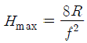
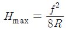
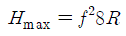
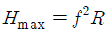
(정답률: 64%)
70. 다음에서 BOM(Bill of Material) 에 해당되는 것은?
- 제품에 필요한 재료 및 필요한 부품 등의 리스트에 관한 문서이다.
- 제작의 필요한 재료의 가격표이다.
- 부품들을 모아 구성된 어셈블리의 형상 데이터이다.
- 재료의 특성에 대해 분석한 도표이다.
(정답률: 38%)
71. 400rpm으로 회전하는 스핀들에서 4회전 드웰(dwell)을 지정하려면 몇 초간 정지지령을 사용해야 하는가?
- 0.6초
- 0.3초
- 1.6초
- 4.6초
(정답률: 31%)
72. 다음중 NC 가공을 위한 입력모델로 부적당한 것은?
- Wireframe model
- Surface model
- B-rep model
- CSG model
(정답률: 48%)
73. 블렌딩 함수로 베른스타인(bernstein)다항식을 사용한 곡선 방정식은?
- 퍼거슨 (ferguson)곡선
- 베지어(bezier)곡선
- B 스플라인(B-spline)곡선
- NURBS 곡선
(정답률: 28%)
74. CNC 공작기계 운전 중 충돌위험이 발생할 때 신속하게 취하여야 할 조치는?
- 조작반의비상스위치를 누른다.
- 전원반의 전기회로를 점검한다.
- 메인 스위치를 차단한다.
- CNC공작기계의 전원 스위치를 차단한다.
(정답률: 78%)
75. 다음중 백 래쉬 (Back Lash)보정 기능에 관한 설명으로 맞는 것은?
- 축의 이동이 한 방향에서 반대방향으로 이동 할때 발생하는 편차값을 보정하는 기능이다.
- 볼 스크루의 부분적인 마모현상으로 발생된 피치간의 편차 값을 보정하는 기능이다.
- 한 방향 위치결정기능의 편차값을 보정하는 기능이다.
- 가공 오차를 보정하는 기능이다.
(정답률: 54%)
76. CAM 가공에서 도형정의 및 운동정의 된 APT 언어를 각종 CNC 기계에 맞게 NC 데이터로 변화시켜주는 업무를 수행하는 것을 맞는 것은?
- 파트 프로그램 (part program)
- 메인 프로세서 (main processor)
- 포스트 프로세서( post processor)
- CL (cutter location)파일
(정답률: 67%)
77. 다음 중 솔리드 모델 (Solid Model) 이 만족하지 않는 성질은 무엇인가?
- 경계성(bounded): 경계가 솔리드의 내부를 제한하고 포함해야 함
- 등질3차원성(homogeneously three-dimensional): 매달린 모서리나 면이 없어서 경계는 항상 솔리드와 접촉하고 있어야 함.
- 기하학적 모호성(ambiguity):곡면에서 생성된 다수열린 곡면으로 구성될 수 있음
- 유한성(finite): 솔리드는 크기가 무한하지 않고 제한된 양의 정보에 의해서 표현 가능해야 함
(정답률: 37%)
78. 머시닝 센터 가공에서 M10x1.5의 탭핑작업을 할경우 테이블 이송속도 F=60mm/min 일때 주축의회전 수 (rpm)는?
- 15
- 40
- 90
- 600
(정답률: 24%)
79. CAD 시스템에서 곡선을 표시하는데 3차식을 사용하는 이유로 적당한 것은?
- 곡면을 생성할 때 고차식에 비해 시간이 적게 걸린다.
- 4차로는 부드러운 곡선을 표현할 수 없기 때문이다.
- CAD 시스템은 3차 이상의차수를 지원할 수 없다.
- 3차가 아니면 곡선의 변형이 안된다.
(정답률: 42%)
80. 다음중 G-코드의 설명으로 잘못된 것은?
- 사용할 수 없는 G-코드를 지령하면 알람이 발생한다.
- 그룹이 서로 다르면 몇 개라도 동일블록에 지령할 수 있다.
- 동일그룹의 G-코드를 같은 블록에 두개이상 지령하면 알람이 발생한다.
- 모달 G-코드는 동일그룹의 다른 G-코드가 나올때 까지 유효하다.
(정답률: 39%)